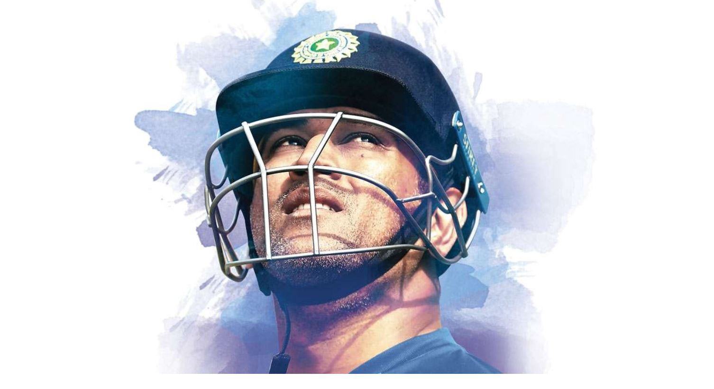

“The other players chose to be the captain of the Indian Cricket Team as a part of their career, But MS Dhoni was a player whose career was to be

“THE INDIAN CAPTAIN”
- Mahendra Singh Dhoni is a former Indian international cricketer who captained the Indian national team in limited-overs formats from 2007 to 2017.
- India won the inaugural 2007 ICC World Twenty20, the 2010 and 2016 Asia Cups
- The 2011 ICC Cricket World Cup and the 2013 ICC Champions Trophy.
- Dhoni is one of the highest run scorers in One Day Internationals (ODIs) with more than 10,000 runs scored and is considered an effective "finisher" in limited-overs formats
- He is widely regarded as one of the greatest wicket-keeper batsmen and captains in the history of the game.[5] He was also the first wicket-keeper to effect 100 stumpings in ODI cricket
- Dhoni made his ODI debut on 23 December 2004 against Bangladesh, and played his first Test a year later against Sri Lanka.
- He has been the recipient of many awards, including the ICC ODI Player of the Year award in 2008 and 2009
- the Rajiv Gandhi Khel Ratna award in 2007, the Padma Shri, India's fourth highest civilian honour, in 2009 and the Padma Bhushan, India's third highest civilian honour, in 2018.
- Dhoni was named as the captain of the ICC World Test XI in 2009, 2010 and 2013. He has also been selected a record 8 times in ICC World ODI XI teams, 5 times as captain.
- The Indian Territorial Army conferred the honorary rank of Lieutenant Colonel to Dhoni on 1 November 2011. He is the second Indian cricketer after Kapil Dev to receive this honour.